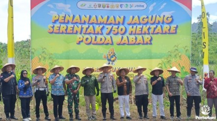

SUKABUMI, PERHUTANI (29/01/2026) | Dalam rangka mendukung program ketahanan pangan Pemerintah, Administratur Kesatuan Pemangkuan Hutan (KPH) Sukabumi, Tofik Hidayat, menghadiri kegiatan Penanaman Jagung Serentak seluas 750 Hektar yang digelar oleh Polda Jawa Barat. Kegiatan yang berlangsung di area Cikeong, Desa Cimanggu, Kecamatan Palabuhanratu, Kabupaten Sukabumi pada Kamis (29/01) merupakan bentuk sinergi multipihak untuk peningkatan produksi pangan.
Tofik Hidayat Administrtur KPH Sukabumi hadir didampingi oleh Andri Asper, Kepala Bagian Kesatuan Pemangkuan Hutan (BKPH) Palabuhanratu. Kehadiran perwakilan dari Perhutani ini menegaskan komitmen dalam mendukung optimalisasi lahan untuk ketahanan pangan.
Acara yang diundang secara langsung oleh Kapolres Kabupaten Sukabumi, AKBP Samian, tersebut dihadiri oleh sejumlah pejabat teras di wilayah Sukabumi. Turut hadir memberikan dukungan antara lain Ketua DPRD Kabupaten Sukabumi, Dandim 0622 Sukabumi, Kepala Dinas Pertanian, Kepala Dinas Ketahanan Pangan, serta Kepala Bulog Divre Reg III Sukabumi. Hadir pula Camat Palabuhanratu dan Danramil setempat, menyempurnakan rentetan sinergi TNI-Polri, Pemda, BUMN, dan instansi kehutanan.
Dalam sambutannya, Kapolres Samian menyatakan bahwa program ini bagian dari upaya preemtif dan preventif Polri untuk mendorong kemandirian pangan sekaligus meningkatkan kesejahteraan petani. “Penanaman jagung serentak ini diharapkan dapat menjadi pemantik bagi masyarakat untuk mengoptimalkan lahan yang ada. Hasilnya nanti akan diserap oleh Bulog, sehingga ada kepastian pasar,” ujarnya.
Sementara itu, Tofik Hidayat menyampaikan apresiasi dan dukungan penuh KPH Sukabumi terhadap inisiatif ini. “Kami dari KPH Sukabumi siap bersinergi dalam hal penyediaan lahan yang sesuai, serta pendampingan teknis jika diperlukan. Program ini sejalan dengan upaya kami dalam pemberdayaan masyarakat sekitar hutan,” tutur Tofik.
Lokasi penanaman di Cikeong dipilih karena dinilai memiliki potensi agronomi yang baik untuk budidaya jagung. Seluas 750 hektar lahan yang akan ditanami tersebut melibatkan ratusan petani dari kelompok tani setempat. Diharapkan, dengan pola serentak ini, perawatan dan penanganan pascapanen dapat dilakukan lebih terkoordinasi, sehingga hasil yang diperoleh maksimal.
Kegiatan diakhiri dengan simbolis penanaman benih jagung oleh seluruh pejabat yang hadir, menandai dimulainya periode tanam di wilayah tersebut. Dengan kolaborasi yang kuat ini, program penanaman jagung serentak diharapkan dapat berkontribusi signifikan terhadap stok pangan regional dan peningkatan pendapatan petani di Kabupaten Sukabumi, khususnya wilayah Palabuhanratu.
Editor: WK
Copyright © 2026 Warta Nusantara Barat